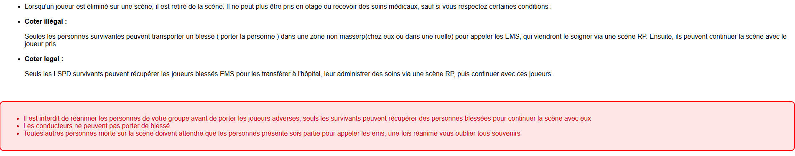
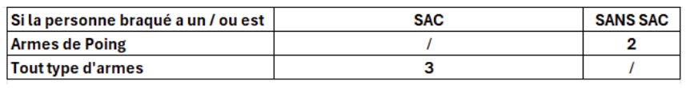
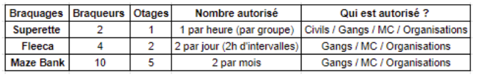
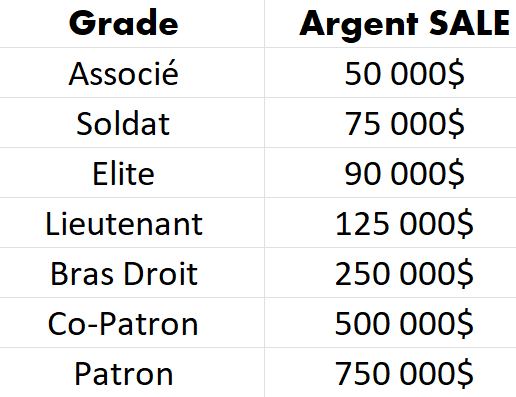
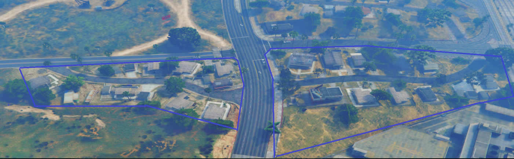
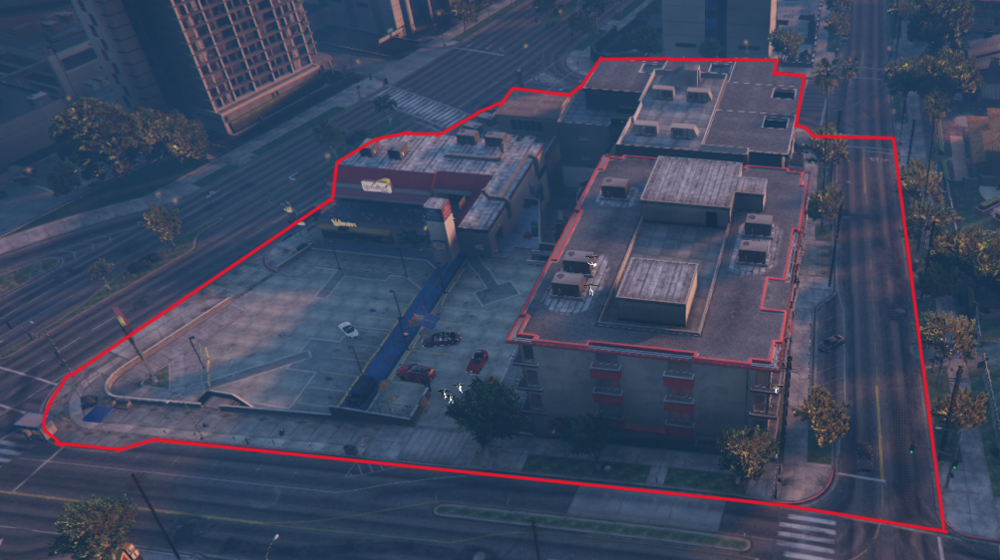
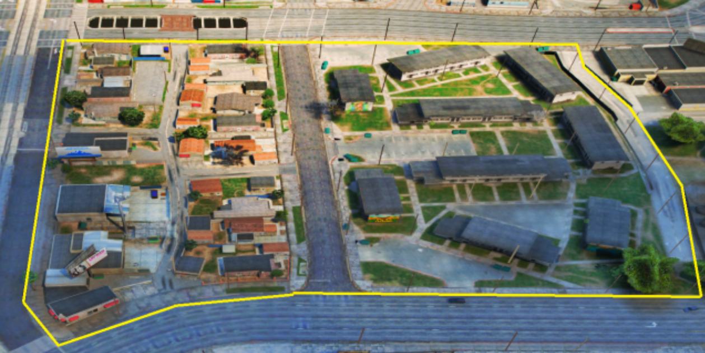
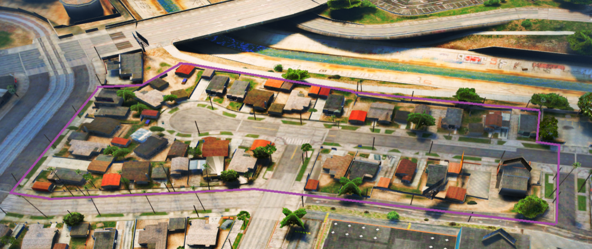
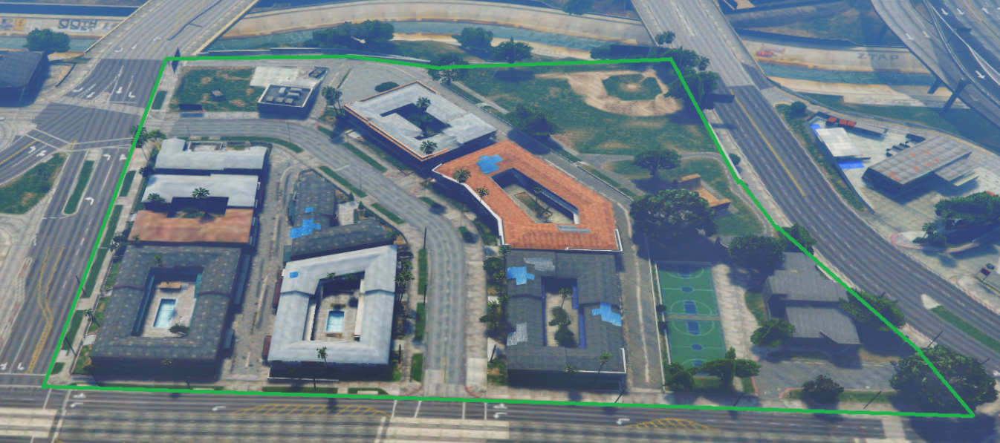

Règlement Général
- Règles Général :
Il est strictement interdit de tirer lorsque vous êtes conducteur d'un véhicule.
Les véhicules exclus sont interdits sur tout type de scène illégale.
Le modificateur de voix n’est autorisé que si vous portez un masque et que la voix est audible.
Entrer ou quitter un groupe illégal dans le but de les faire couler ou de leur causer du tort est interdit.
Il est interdit de faire un Report pouvant annuler une scène lors de son déroulement, privilégiez un ticket discord.
Les arnaques sont interdites, en cas d'arnaque vous vous exposez à un Bannissement Permanent.
Les aides entre groupes officiels sont strictement interdites, sans accord des GI..

Lorsqu'un membre des forces l'ordres, du gouvernement ou de toutes organisations/gangs est pointé par une arme, il doit obligatoirement révéler son grade et le nom de son groupe sans mentir. Si vous ne respectez pas cette règle vous vous exposez à la mort RP ou une sanction staff.
Sur chaque scène, 1 seul négociateur doit être désigné, qui ne doit pas changer au cours de la scène.
Les alliances temporaires entre gang/organisation dans une scène illégal/LSPD sont autorisées en respectant ces conditions (ouverture d'un ticket illégal afin de tenir au courant les G-I):
Les alliances sont la pour compléter votre groupe lors dune scène ou si vous avez un objectif mais qu'il vous manque des membres, cependant vous ne pourrez pas dépasser le nombre maximum de vôtre groupe.
Les alliances ne sont pas autorisés lors de gros braquages tel que Maze bank, Pacifique...
Les alliances peuvent se mettre en place par contrat réalisés uniquement en RP via des négociations et rencontres.
Si deux groupes sont en alliance et qu'ils se trouvent sur un point de drogue, alors ils sont autorisés à s'entraider pendant une descente LSPD.
- Règlement avec les Forces de l’ordre et les EMS :
Vous pouvez prendre en otage un LSPD s'il est détaché du groupe d'intervention. Cet otage doit être utilisé pour récupérer ce que vous êtes venu chercher, cependant la police peut tout aussi bien "interpeler" un membre de votre groupe qui se retrouve isolé. Dans ces cas-là, vous serez amené à faire un choix entre ce que vous êtes venu chercher et votre amie.
Il est interdit de prendre en otage un EMS.
Il est formellement interdit de prétendre être un ems, un policier, un membre du gouvernement ou un avocat.
Si vous êtes armé, masqué ou que vous portez un gilet par-bas en ville, alors la police peut vous contrôler et vous arrêtez pour un controle d'identité.
Pour braquer un membre de la LSPD/GOUV il vous faut etre 2fois supperieur(1 agent po = 2 prenneur d'otage) et une raison valable(tout abus sera sanctionné)
Il n'ai pas possible de déposer un otage à l'hôpital pour le récupérer une fois soigner.
Lorsqu'un membre des forces l'ordres, du gouvernement ou de toutes organisations/gangs est pointé par une arme, il doit obligatoirement révéler son grade et le nom de son groupe sans mentir. Si vous ne respectez pas cette règle vous vous exposer à la mort RP ou une sanction staff.
Les forces de l'ordre peuvent intervenir sur une scène illégale si ils ont des informations sur celle-ci, cependant ils ne peuvent pas intervenir sur une scène illégale sans aucune information.
- Descentes :
Après une descente avec dossier , l'équipe " Gagnante " aura également la possibilité de prendre en otage des membre de l'équipe perdante en respectant les conditions des prises d'otage et réanimation.
Sur une descente de villa/quartier, le groupe qui gagne la descente prend 100K XP sur le groupe perdant.
Les descentes sans dossier sont strictement interdites et lourdement punissables même si les personnes dans leur villa / quartier vous tirent dessus vous ne devez pas répliquer contacter un membre de l'équipe staff , si vous répliquer vous serez considéré comme seul fautif.
- Braquages :
Si vous fouillez une personne, il est interdit de prendre plus de 50 % d'argent, et de munitions sur elle, sinon cela sera sanctionné d'un FreeLoot.
Il est interdit de prendre des vêtements, des kits moteurs/carrosseries, les items d'entreprises de farm et tous types de nourriture.
Braquer une quelconque personne afin de lui dérober uniquement ses items sans but RP concret se verra sanctionné d'un Freeloot.
Aucun délai ne permet de braquer/kidnapper une quelconque personne dans une zone de MassRP, peu importe la situation, le MassRP se doit d'être respecté !
Appeler un employé pour un service (Appel entreprise) dans le but de le braquer est strictement interdit.
Il est interdit de lancer un braquage sans le terminer, sans raison valable. Assumez la conséquence de vos actes. Sous peine de ban ou wipe personnage.
Voici un tableau pour montrer ce que vous pouvez dérober quand la personne que vous braquez à un sac ou est sans sac :

Lorsque vous braquez une personne il faut forcément être en supériorité numérique pour braquer quelqu'un / un groupe armé. Cependant si vous braquez des personnes qui n'ont pas d'armes dans les mains, il suffit seulement d'être autant de braqueurs que de braquer ( 2vs2 ) .
Les routes de campagne ainsi que les ruelles ne sont pas comprises comme zone de MassRP.
Il est interdit de forcer un joueur à retirer de l'argent à la banque, voler les items dans les coffres etc...(ForceRp)
Les otages extérieurs à la scène sont interdits (en dehors du lieu de braquage), les PNJ ne comptent pas comme otage.
Voici un tableau explicatif pour les braquages :

Le nombre d'otages indiqué ci-dessus est le minimum requis mais également le maximum autorisé pour chaque braquage.
Lorsque vous êtes braqueur, vous n'êtes pas autorisé à vous faire passer pour un otage pour vous en sortir.
Pour braquer quelqu'un il faut une raison RP, il y a plusieurs motifs qui peuvent le justifier :
- Le besoin d'otage pour une scène de braquage
- Des éléments laissant penser que le joueur commet des actes criminels (soit l'individu est masqué, armé ou porte un gilet par balle).
Les vêtements d'un individu ne sont pas une raison valable pour le braquer. Lors d'un braquage il est interdit de partir avec un otage.
Lors d'un braquage, Vous êtes autorisé à faire un plan mule ou quelque chose qui y ressemble 5 min après le début de la course poursuite,afin d'éviter le WinRP.
- Prise d’otages :
Il est impératif d'utiliser vos otages au plus tard 1h30 après leur capture, pour éviter de les bloquer dans leur RP.
Il est nécessaire de faire un ticket illégal afin de garder un otage plus longtemps que prévu.Un rec video de la prise d'otage vous sera demandé pour s'assurer que vous avez braqué la personne de façon RP
Il est également interdit de garder des otages durant plusieurs heures sans but RP juste pour bloquer leur RP.
Il est strictement interdit de prendre en otage le négociateur. Il est toutefois autorisé de braquer des personnes se situant à une distance convenable/ hors de la vue de la négociation pour prendre un avantage pendant les négociations.
Afin d'eviter tout abus nous avons mis en place une limite de rançons


- Points chauds :
A venir
- Mort RP :
Une mort RP consiste en la fin définitive de votre personnage RP.
Les demandes de Mort RP sans cohérence ni motif Rôle Play ne seront pas prises en compte.
- Contrat :
Un contrat ne peut être éternel.
Le contrat doit être signé et vu en RolePlay par les 2 groupes, puis envoyé dans un ticket discord, sous forme de Gdoc.
La durée d'un contrat peut varier en fonction des termes de celui-ci.
Les contrats doivent respecter une cohérence RP
Règlement organisation
- Géneral :
Les aides entre organisations sont strictement interdites, sans accord des GI.
Il vous est interdit de faire une OP ou des actes illégaux sans porter votre tenue d’organisation (Porter la même tenue est obligatoire pour tout le monde.)
En cas de conflit avec un autre groupe, vous devrez obligatoirement faire appel à un gérant illégal.
Seuls les leaders ont le droit de communiquer avec un gérant illégal en cas de plainte ou autres problèmes.
Les organisations ont le droit de missionner les gangs.
Jouer le fear LSPD est obligatoire, vous êtes censé fuir la LSPD et non la combattre,à part pour quelque exeptions
- Achat Orga :
Un dossier de candidature pour l'acquisition d'un groupe illégal est recquis.Vous y trouverez les éléments que nous vous demandons de respecter. Il est libre à vous de personnaliser la présentation ou d'ajouter des éléments supplémentaires. Si votre dossier est accepté par nos GI, vous aurez la possibilité d'acheter le pack gang et de débuter votre aventure. Une fois votre dossier finalisé, merci d'ouvrir un ticket dans la catégorie illégal et de fournir votre dossier. Vous recevrez une réponse sous 24 heures pour savoir si votre candidature est acceptée ou non.
Une fois votre groupe accepté, un référent sera à votre disposition pour vous guider dans le monde des groupes illégaux.
Les organisations peuvent compter jusqu'à un maximum de 20 membres.
Atlande se réserve le droit de supprimer une Organisation à tout moment si le groupe devient inactif ou pose des problèmes, ce n'est pas parce que vous avez payé que votre groupe ne peut pas être supprimé. (aucun remboursement est prévu si vous êtes delete).
Les organisations bénéficient de plusieurs avantages, notamment un coffre de groupe, un espace de stationnement dans leur villa, un menu de gestion organisationnelle.
En tant que leader, vous êtes soumis à des sanctions en cas de non-respect des règles.
Veillez à maintenir une gestion adéquate de votre groupe et à éviter autant que possible les conflits inutiles.
Il est impératif de maintenir un environnement de jeu respectueux envers les autres joueurs, le staff et les autres groupes, en évitant les conflits en dehors du jeu.
Règlement Gang
- Général :
Les aides entre gangs sont strictement interdites, sans accord des GI.
Les membres de gangs doivent avoir une touche de leur code couleur obligatoirement sur eux (à part s’ils sont en service entreprise), en ce qui concernent de leurs véhicules d’opérations ou d’actes illégaux, elles doivent avoir le même code couleur.
Les gangs n’ont pas l’autorisation d’utiliser les snipers (hors mousquet).
Les gangs peuvent utiliser 1 véhicule importé par convoi, mais il est important de maintenir la cohérence rp en ce qui concerne le groupe, ainsi que la correspondance entre les voitures et la couleur distinctive du gang.
Les gangs ont le droit de missionner les organisations.
Les gangs peuvent être missionnés par les Organisations.
Jouer le fear LSPD est obligatoire, vous êtes censé fuir la LSPD et non la combattre,à part pour quelque exeptions
Les quartiers sont des zones dangereuses où vous pouvez vous faire braquer par les détenteurs du quartier, donc chaque joueur pourra rentrer dans les quartiers avec ses risques et périls.
- Reprise de Gangs :
Pour reprendre un Gang, vous devez soumettre un dossier de candidature en respectant préalablement toutes les conditions requises dans ce gdoc :Dossier de reprise de Gang. Ensuite, les gérants illégaux voteront pour approuver ou rejeter votre candidature.
Les Gangs peuvent compter jusqu'à un maximum de 25 membres.
Atlande se réserve le droit de supprimer un Gang à tout moment s'il devient inactif ou pose des problèmes.
Une fois votre candidature validée, un référent sera à votre disposition pour vous guider dans le monde des groupes illégaux.
En cas de conflit avec un autre groupe, vous devrez obligatoirement faire appel à votre référent.
Seuls les leaders ont le droit de communiquer avec un gérant illégal en cas de plainte ou autres problèmes.
En tant que leader, vous êtes soumis à des sanctions en cas de non-respect des règles.
Veillez à maintenir une gestion adéquate de votre groupe et à éviter autant que possible les conflits inutiles.
Il est impératif de maintenir un environnement de jeu respectueux envers les autres joueurs, le staff et les autres groupes, en évitant les conflits en dehors du jeu.
Limites Quartiers :
- Marabunta :

- Bloods :

- Vagos :

- Ballas :

- Families :
